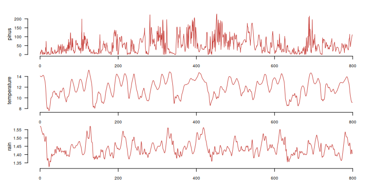
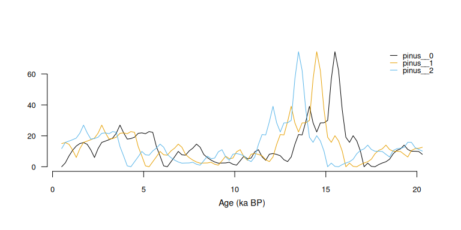
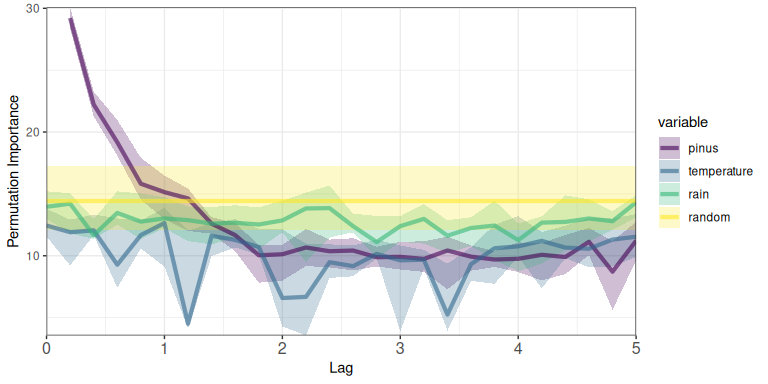

The memoria package quantifies ecological memory in long time-series involving environmental drivers and biotic responses. It uses Random Forest models to measure the relative importance of endogenous memory (effect of past response values), exogenous memory (effect of past driver values), and concurrent effects (synchronic driver influence).
Installation
Install from CRAN:
install.packages("memoria")Or the development version from GitHub:
devtools::install_github("BlasBenito/memoria")Quick Example
This minimal example uses built-in data to demonstrate the core workflow.
Example Data
The palaeodata dataset contains is a palaeoecological dataset with pollen counts (non-integer because the data was interpolated to a regular grid, see mergePalaeoData()) for several taxa and several climate variables.
data(palaeodata)
dplyr::glimpse(palaeodata)
#> Rows: 3,993
#> Columns: 10
#> $ age <dbl> 0.5, 0.7, 0.9, 1.1, 1.3, 1.5, 1.7, 1.9…
#> $ pollen.pinus <dbl> 0.000000, 2.504311, 6.970560, 10.64129…
#> $ pollen.quercus <dbl> 95.58695, 109.43764, 120.11562, 127.74…
#> $ pollen.poaceae <dbl> 0.000000, 9.548974, 16.791644, 21.7550…
#> $ pollen.artemisia <dbl> 0.0000000, 0.0000000, 0.6724734, 1.696…
#> $ climate.temperatureAverage <dbl> 14.08241, 14.06364, 14.04636, 14.03058…
#> $ climate.rainfallAverage <dbl> 1.570000, 1.570000, 1.570000, 1.570000…
#> $ climate.temperatureWarmestMonth <dbl> 21.04644, 21.25322, 21.45470, 21.65086…
#> $ climate.temperatureColdestMonth <dbl> 5.249096, 5.240348, 5.229598, 5.216903…
#> $ climate.oxigenIsotope <dbl> 3.425792, 3.428361, 3.431511, 3.435238…For this example we select one of the plant species and two climate variables.
#subset variables of interest
df <- palaeodata |>
dplyr::transmute(
pinus = pollen.pinus,
temperature = climate.temperatureAverage,
rain = climate.rainfallAverage,
time = age
)
#time series plot
df |>
distantia::tsl_init(
time_column = "time"
) |>
distantia::tsl_plot(
ylim = "relative",
guide = FALSE
) Notice that in the plot above, time, in thousands of years before present, goes from right (oldest) to left (newest).
The next step requires building a lagged version of the data, in which each value of the response and the predictors (drivers) is matched with previous values.
#lag in ka
#"by" must match the resolution of df
lags <- seq(from = 0.2, to = 5, by = 0.2)
df_lags <- memoria::prepareLaggedData(
input.data = df,
response = "pinus",
drivers = c(
"temperature",
"rain"
),
time = "time",
oldest.sample = "last",
lags = lags
)
dplyr::glimpse(df_lags)
#> Rows: 3,968
#> Columns: 79
#> $ pinus__0 <dbl> 0.000000, 2.504311, 6.970560, 10.641292, 13.387639, 1…
#> $ pinus__0.2 <dbl> 2.504311, 6.970560, 10.641292, 13.387639, 15.023729, …
#> $ pinus__0.4 <dbl> 6.970560, 10.641292, 13.387639, 15.023729, 15.619855,…
#> $ pinus__0.6 <dbl> 10.6412923, 13.3876394, 15.0237290, 15.6198546, 14.51…
#> $ pinus__0.8 <dbl> 13.3876394, 15.0237290, 15.6198546, 14.5163833, 10.88…
#> $ pinus__1 <dbl> 15.0237290, 15.6198546, 14.5163833, 10.8839100, 5.995…
#> $ pinus__1.2 <dbl> 15.6198546, 14.5163833, 10.8839100, 5.9950859, 11.775…
#> $ pinus__1.4 <dbl> 14.5163833, 10.8839100, 5.9950859, 11.7753734, 15.743…
#> $ pinus__1.6 <dbl> 10.8839100, 5.9950859, 11.7753734, 15.7433291, 16.595…
#> $ pinus__1.8 <dbl> 5.9950859, 11.7753734, 15.7433291, 16.5953322, 17.491…
#> $ pinus__2 <dbl> 11.7753734, 15.7433291, 16.5953322, 17.4914659, 18.53…
#> $ pinus__2.2 <dbl> 15.7433291, 16.5953322, 17.4914659, 18.5317822, 21.75…
#> $ pinus__2.4 <dbl> 16.5953322, 17.4914659, 18.5317822, 21.7547684, 26.94…
#> $ pinus__2.6 <dbl> 17.4914659, 18.5317822, 21.7547684, 26.9425866, 21.94…
#> $ pinus__2.8 <dbl> 18.5317822, 21.7547684, 26.9425866, 21.9470415, 17.88…
#> $ pinus__3 <dbl> 21.7547684, 26.9425866, 21.9470415, 17.8845479, 18.24…
#> $ pinus__3.2 <dbl> 26.9425866, 21.9470415, 17.8845479, 18.2428705, 19.10…
#> $ pinus__3.4 <dbl> 21.9470415, 17.8845479, 18.2428705, 19.1090245, 21.62…
#> $ pinus__3.6 <dbl> 17.8845479, 18.2428705, 19.1090245, 21.6279072, 21.90…
#> $ pinus__3.8 <dbl> 18.2428705, 19.1090245, 21.6279072, 21.9079992, 21.36…
#> $ pinus__4 <dbl> 19.1090245, 21.6279072, 21.9079992, 21.3638099, 22.74…
#> $ pinus__4.2 <dbl> 21.6279072, 21.9079992, 21.3638099, 22.7459342, 22.24…
#> $ pinus__4.4 <dbl> 21.9079992, 21.3638099, 22.7459342, 22.2438480, 13.04…
#> $ pinus__4.6 <dbl> 21.3638099, 22.7459342, 22.2438480, 13.0423754, 6.967…
#> $ pinus__4.8 <dbl> 22.7459342, 22.2438480, 13.0423754, 6.9679862, 0.5656…
#> $ pinus__5 <dbl> 22.2438480, 13.0423754, 6.9679862, 0.5656565, 0.00000…
#> $ temperature__0 <dbl> 14.08241, 14.06364, 14.04636, 14.03058, 14.01631, 14.…
#> $ temperature__0.2 <dbl> 14.06364, 14.04636, 14.03058, 14.01631, 14.00359, 13.…
#> $ temperature__0.4 <dbl> 14.04636, 14.03058, 14.01631, 14.00359, 13.99243, 13.…
#> $ temperature__0.6 <dbl> 14.03058, 14.01631, 14.00359, 13.99243, 13.98284, 13.…
#> $ temperature__0.8 <dbl> 14.01631, 14.00359, 13.99243, 13.98284, 13.97485, 13.…
#> $ temperature__1 <dbl> 14.00359, 13.99243, 13.98284, 13.97485, 13.96844, 13.…
#> $ temperature__1.2 <dbl> 13.99243, 13.98284, 13.97485, 13.96844, 13.96361, 13.…
#> $ temperature__1.4 <dbl> 13.98284, 13.97485, 13.96844, 13.96361, 13.96034, 13.…
#> $ temperature__1.6 <dbl> 13.97485, 13.96844, 13.96361, 13.96034, 13.95861, 13.…
#> $ temperature__1.8 <dbl> 13.96844, 13.96361, 13.96034, 13.95861, 13.95838, 13.…
#> $ temperature__2 <dbl> 13.96361, 13.96034, 13.95861, 13.95838, 13.95961, 13.…
#> $ temperature__2.2 <dbl> 13.96034, 13.95861, 13.95838, 13.95961, 13.96222, 13.…
#> $ temperature__2.4 <dbl> 13.95861, 13.95838, 13.95961, 13.96222, 13.96616, 13.…
#> $ temperature__2.6 <dbl> 13.95838, 13.95961, 13.96222, 13.96616, 13.97136, 13.…
#> $ temperature__2.8 <dbl> 13.95961, 13.96222, 13.96616, 13.97136, 13.97776, 13.…
#> $ temperature__3 <dbl> 13.96222, 13.96616, 13.97136, 13.97776, 13.98544, 13.…
#> $ temperature__3.2 <dbl> 13.96616, 13.97136, 13.97776, 13.98544, 13.99476, 14.…
#> $ temperature__3.4 <dbl> 13.97136, 13.97776, 13.98544, 13.99476, 14.00663, 14.…
#> $ temperature__3.6 <dbl> 13.97776, 13.98544, 13.99476, 14.00663, 14.02234, 14.…
#> $ temperature__3.8 <dbl> 13.98544, 13.99476, 14.00663, 14.02234, 14.04206, 14.…
#> $ temperature__4 <dbl> 13.99476, 14.00663, 14.02234, 14.04206, 14.06052, 14.…
#> $ temperature__4.2 <dbl> 14.00663, 14.02234, 14.04206, 14.06052, 14.07484, 14.…
#> $ temperature__4.4 <dbl> 14.02234, 14.04206, 14.06052, 14.07484, 14.09563, 14.…
#> $ temperature__4.6 <dbl> 14.04206, 14.06052, 14.07484, 14.09563, 14.11849, 14.…
#> $ temperature__4.8 <dbl> 14.06052, 14.07484, 14.09563, 14.11849, 14.13328, 14.…
#> $ temperature__5 <dbl> 14.07484, 14.09563, 14.11849, 14.13328, 14.14602, 14.…
#> $ rain__0 <dbl> 1.570000, 1.570000, 1.570000, 1.570000, 1.570000, 1.5…
#> $ rain__0.2 <dbl> 1.570000, 1.570000, 1.570000, 1.570000, 1.569424, 1.5…
#> $ rain__0.4 <dbl> 1.570000, 1.570000, 1.570000, 1.569424, 1.568048, 1.5…
#> $ rain__0.6 <dbl> 1.570000, 1.570000, 1.569424, 1.568048, 1.566565, 1.5…
#> $ rain__0.8 <dbl> 1.570000, 1.569424, 1.568048, 1.566565, 1.564987, 1.5…
#> $ rain__1 <dbl> 1.569424, 1.568048, 1.566565, 1.564987, 1.563325, 1.5…
#> $ rain__1.2 <dbl> 1.568048, 1.566565, 1.564987, 1.563325, 1.561583, 1.5…
#> $ rain__1.4 <dbl> 1.566565, 1.564987, 1.563325, 1.561583, 1.559766, 1.5…
#> $ rain__1.6 <dbl> 1.564987, 1.563325, 1.561583, 1.559766, 1.557871, 1.5…
#> $ rain__1.8 <dbl> 1.563325, 1.561583, 1.559766, 1.557871, 1.555890, 1.5…
#> $ rain__2 <dbl> 1.561583, 1.559766, 1.557871, 1.555890, 1.553790, 1.5…
#> $ rain__2.2 <dbl> 1.559766, 1.557871, 1.555890, 1.553790, 1.551496, 1.5…
#> $ rain__2.4 <dbl> 1.557871, 1.555890, 1.553790, 1.551496, 1.548835, 1.5…
#> $ rain__2.6 <dbl> 1.555890, 1.553790, 1.551496, 1.548835, 1.545830, 1.5…
#> $ rain__2.8 <dbl> 1.553790, 1.551496, 1.548835, 1.545830, 1.543771, 1.5…
#> $ rain__3 <dbl> 1.551496, 1.548835, 1.545830, 1.543771, 1.542352, 1.5…
#> $ rain__3.2 <dbl> 1.548835, 1.545830, 1.543771, 1.542352, 1.540789, 1.5…
#> $ rain__3.4 <dbl> 1.545830, 1.543771, 1.542352, 1.540789, 1.539005, 1.5…
#> $ rain__3.6 <dbl> 1.543771, 1.542352, 1.540789, 1.539005, 1.537520, 1.5…
#> $ rain__3.8 <dbl> 1.542352, 1.540789, 1.539005, 1.537520, 1.536191, 1.5…
#> $ rain__4 <dbl> 1.540789, 1.539005, 1.537520, 1.536191, 1.534481, 1.5…
#> $ rain__4.2 <dbl> 1.539005, 1.537520, 1.536191, 1.534481, 1.532796, 1.5…
#> $ rain__4.4 <dbl> 1.537520, 1.536191, 1.534481, 1.532796, 1.531755, 1.5…
#> $ rain__4.6 <dbl> 1.536191, 1.534481, 1.532796, 1.531755, 1.530777, 1.5…
#> $ rain__4.8 <dbl> 1.534481, 1.532796, 1.531755, 1.530777, 1.529046, 1.5…
#> $ rain__5 <dbl> 1.532796, 1.531755, 1.530777, 1.529046, 1.526795, 1.5…
#> $ time <dbl> 0.5, 0.7, 0.9, 1.1, 1.3, 1.5, 1.7, 1.9, 2.1, 2.3, 2.5…Lets plot three of these lags to see how they look:
distantia::zoo_plot(
x = zoo::zoo(
x = df_lags[1:100, c("pinus__0", "pinus__1", "pinus__2")],
order.by = df_lags$time[1:100]
),
xlab = "Age (ka BP)"
)
Ecological Memory Analysis
The function computeMemory() trains Random Forest models with the lagged data, using “pinus_0” as response, all other variables as predictors, and a randomly generated variable for significance testing.
memory <- memoria::computeMemory(
lagged.data = df_lags,
repetitions = 10,
num.threads = parallel::detectCores() - 1
)The output object is a list with the response, the drivers, the ecological memory analysis, the pseudo R-squared of the model predictions, and the prediction stats.
names(memory)
#> [1] "response" "drivers" "memory" "R2" "prediction"
dplyr::glimpse(memory$memory)
#> Rows: 103
#> Columns: 6
#> $ median <dbl> 29.213878, 22.221188, 19.170626, 15.819255, 15.140499, 14.630…
#> $ sd <dbl> 0.6814508, 0.7123891, 1.1075636, 1.2512961, 1.4491825, 1.2420…
#> $ min <dbl> 28.366586, 21.271992, 18.080622, 14.537870, 12.931494, 12.003…
#> $ max <dbl> 30.08005, 23.26677, 20.97056, 17.90699, 16.48366, 15.42053, 1…
#> $ variable <fct> pinus, pinus, pinus, pinus, pinus, pinus, pinus, pinus, pinus…
#> $ lag <dbl> 0.2, 0.4, 0.6, 0.8, 1.0, 1.2, 1.4, 1.6, 1.8, 2.0, 2.2, 2.4, 2…The output of computeMemory() can be plotted with plotMemory().
memoria::plotMemory(
memory,
ribbon = TRUE
)
The plot shows all ecological memory components of this dataset.
Endogenous memory (“pinus” curve): shows the importance of the past pollen abundance in predicting current pollen abundance. The plot shows this is the most important ecological memory component in this dataset.
Significance test (“random” curve): shows the importance of 10 random autocorrelated variables to predict the response “pinus”. Helps to know when a given memory component explains the response better or worse than random.
Concurrent effect (“temperature” and “rain” at lag 0): importance of the current driver values to predict the response. Both drivers are below the “random” curve, indicating that the concurrent effect is negligible in this dataset.
Exogenouos memory (“temperature” and “rain” at lag > 0): importance of the past driver values in explaining the current response values.
Learn More
- Working with memoria: Complete workflow from raw data to memory features
- Function Reference: Documentation for all exported functions
How to cite memoria
If you use memoria in your research, please cite both the package and the associated paper:
Paper:
Benito, B.M., Gil-Romera, G., & Birks, H.J.B. (2020). Ecological memory at millennial time-scales: the importance of data constraints, species longevity, and niche features. Ecography, 43(1), 1-10. doi: 10.1111/ecog.04772
R package:
Benito, B.M. (2025). memoria: Quantifying Ecological Memory in Palaeoecological Datasets and Other Long Time-Series. R package version 1.1.0. doi: 10.32614/CRAN.package.memoria